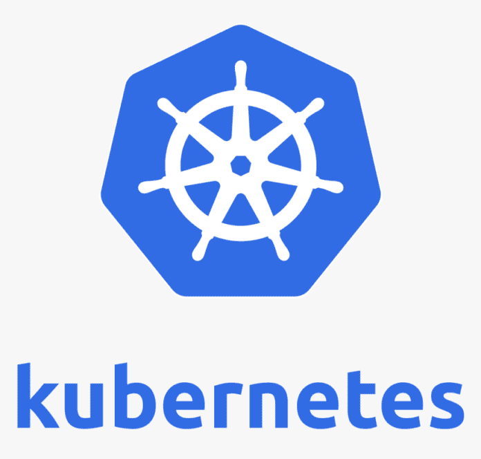

Hello, World!
This is a simple HTML file.

Below is the intro of k8s.
Introduction to Kubernetes
Kubernetes is an open-source container orchestration platform that automates the deployment, scaling, and management of containerized applications. It provides a highly flexible and scalable infrastructure for running and managing containers.
Key Features of Kubernetes:
- Automatic scaling and load balancing
- Service discovery and load distribution
- Rolling updates and rollback capabilities
- Self-healing and fault tolerance
- Declarative configuration and infrastructure as code
Benefits of Kubernetes:
- Efficient resource utilization
- Improved application availability and reliability
- Easy horizontal scaling
- Increased developer productivity
- Support for multiple cloud providers and on-premises environments